～長崎県&佐賀県&山口県編～
2024年2月23日～25日に旅行した記事になります！
▶ 今回の旅の目次
佐世保バーガーの有名店！
バーガーショップ あいかわ！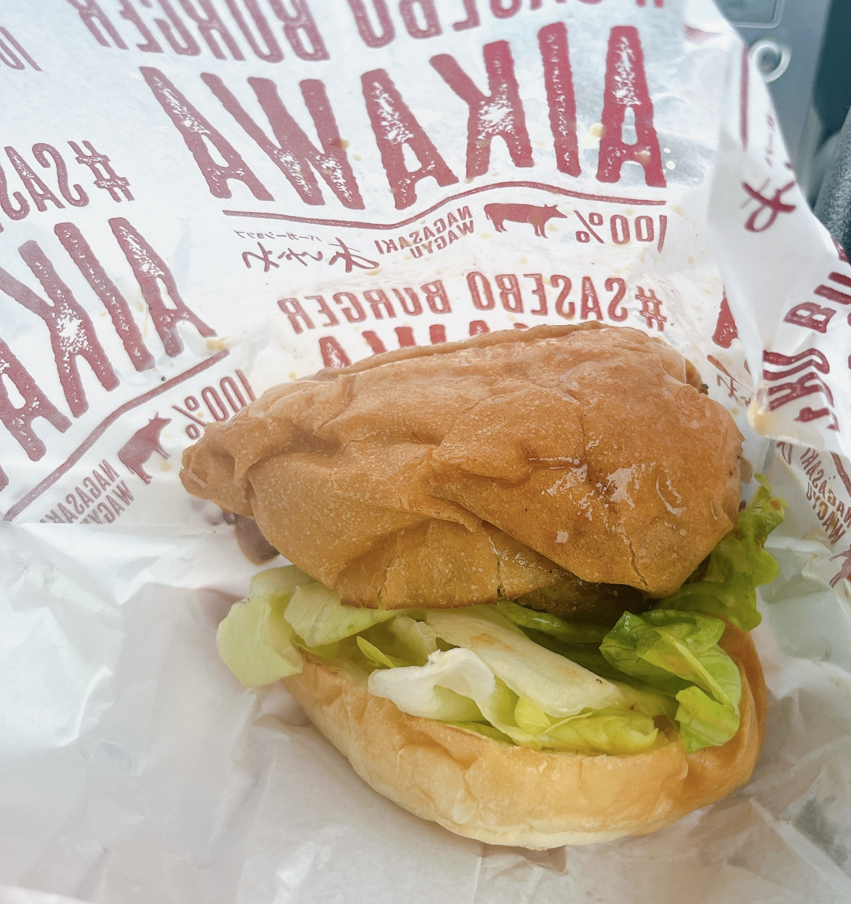
ながさき牛を贅沢に使用したバーガーショップ あいかわ！
一頭買いした最高のお肉を使用した佐世保バーガーは
噛みしめる度に肉汁と旨味が溢れとても美味しかったです！
バーガーショップ あいかわ
営業時間：10:00～21:00
定休日：元旦
予約可否：予約不可
駐車場：あり
TEL：0956-58-2981
住所：長崎県佐世保市有福町297-20
URL： 食べログで見る
冒険商人の邸宅！グラバー園！
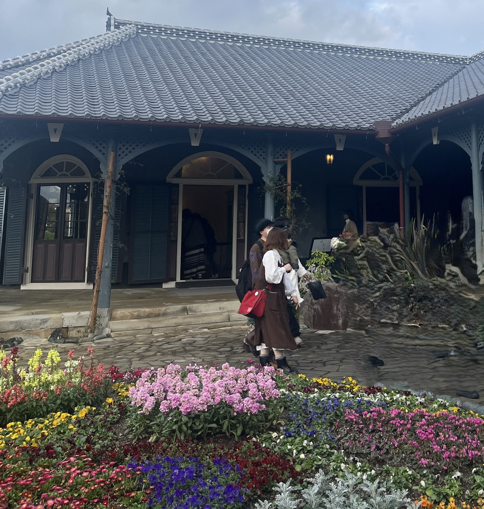
150年以上前に建設された重要文化財の建物を観光できるグラバー園！
稲佐山を背景に長崎港を一望できる絶景スポットとしても有名です！
また石畳の一角にあるハーフストーンは触れて願い事をすれば恋が叶うという
恋愛成就の伝説があるパワースポットでもあります！
潜伏キリシタン関連遺産！大浦天主堂！
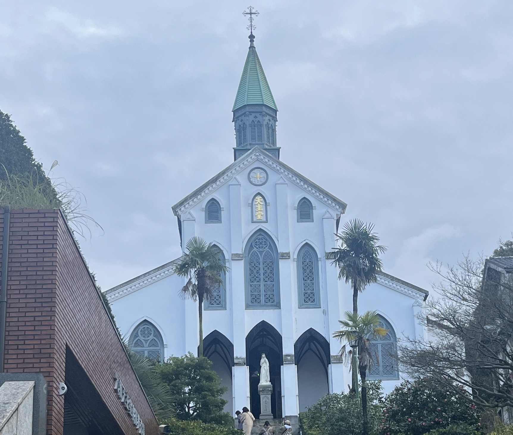
2018年に世界文化遺産にも登録された大浦天主堂！
神秘的できれいな教会内装は見た人を魅了します！
禁教政策とキリシタンの戦いの歴史を学ぶことができる
歴史的で重要な建物でもあります！
名護屋城の遺材を活用！唐津城！
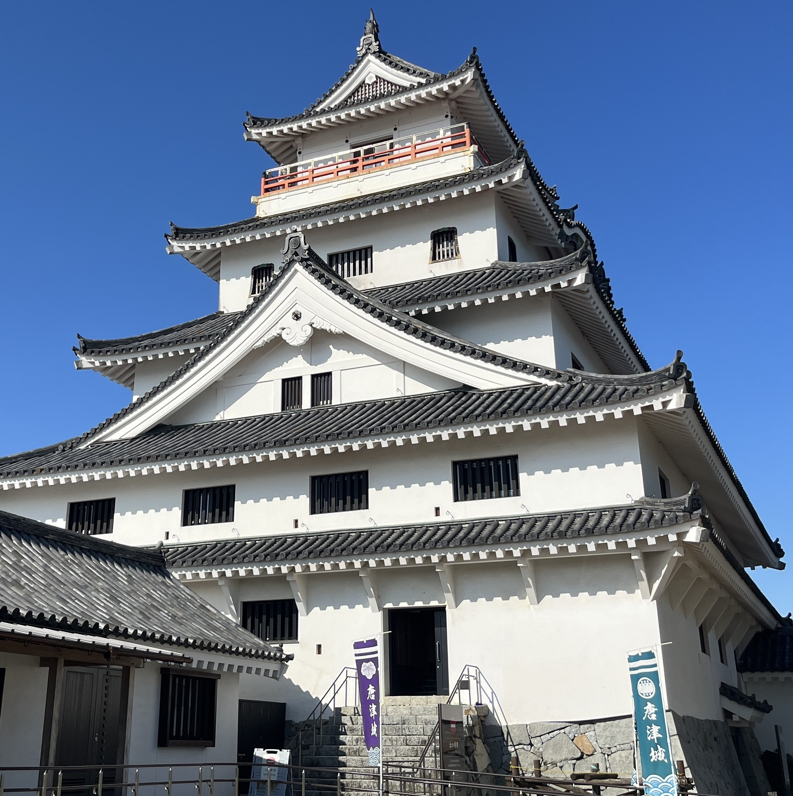 別名「舞鶴城」とも呼ばれている唐津城！
豊臣秀吉が朝鮮出兵の拠点として築城した名護屋城の遺材を活用されています！ 天守閣からは日本三大松原の虹の松原を眺めることができます！
伊万里牛を鉄板焼きで！ステーキハウスつじ川！
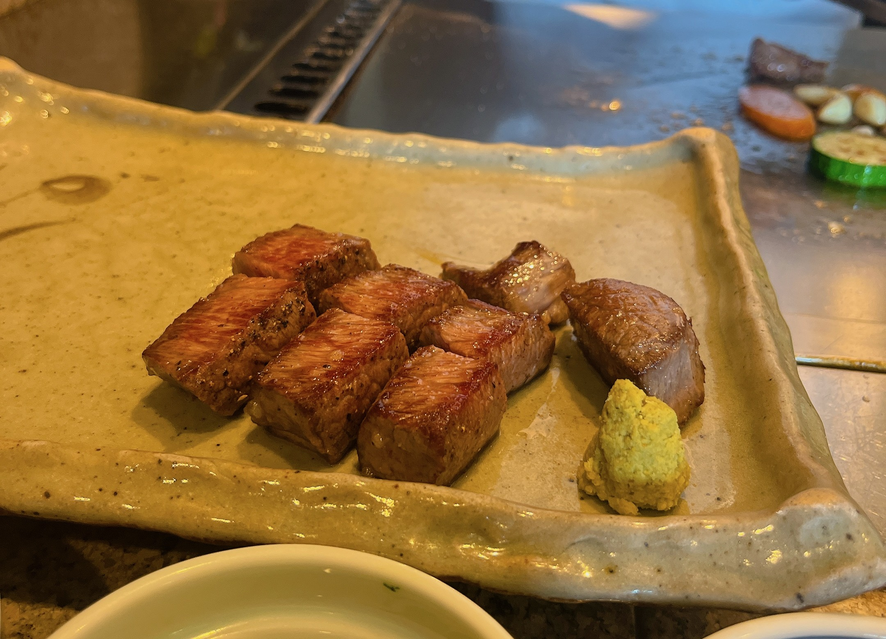 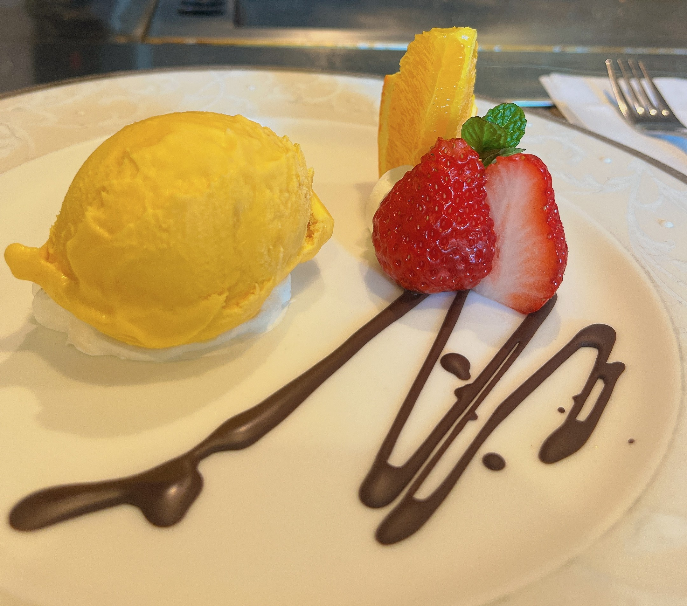 最高級の伊万里牛を鉄板焼きで楽しめるステーキハウスつじ川！
旨味の凝縮された柔らかくも噛み応えのあるお肉は
僕の好きな牛肉ブランドトップ3のひとつです！
つじ川
営業時間：11:30～14:30 17:00～21:00
定休日：なし
予約可否：予約可
駐車場：あり
TEL：0955-23-2660
住所：佐賀県伊万里市新天町720-3
URL： 食べログで見る
日本三大稲荷のひとつ！祐徳稲荷神社！
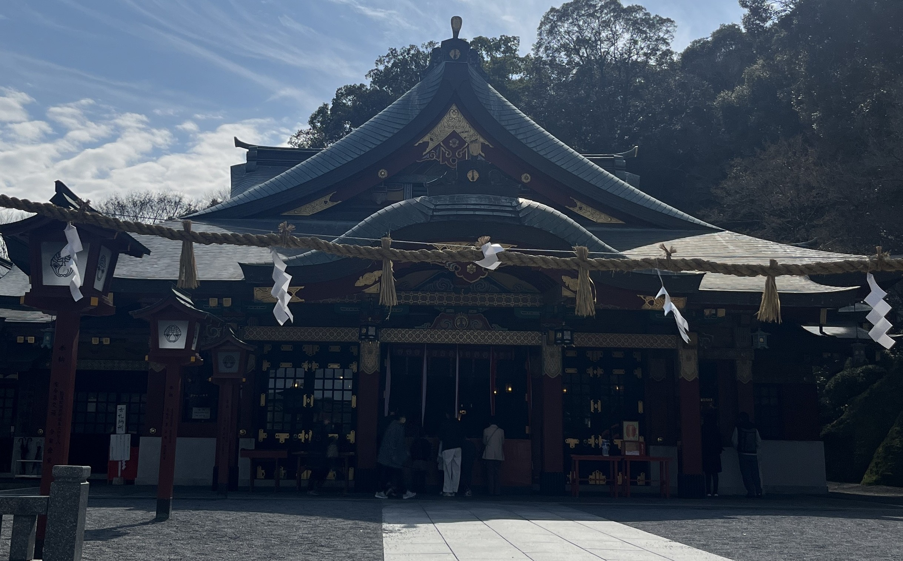 1687年に稲荷大神のご分霊を勧請された祐徳稲荷神社！
荘厳で華麗な本殿には年間約300万人が訪れる有名な神社となります！
有明のむつごろうが楽しめる！
むつごろう亭 丸善！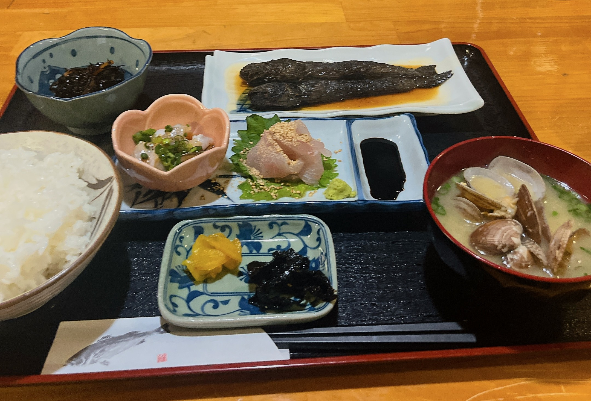 ご主人自ら漁に出て獲った有明産のむつごろうが楽しめる丸善！
刺身は泥臭さがなくさっぱりとした白身のようでとても美味しかったです！
むつごろう亭 丸善
営業時間：11:30～14:00 17:00～22:00
定休日：不定休
予約可否：予約可
駐車場：あり
TEL：0952-45-2911
住所：佐賀県佐賀市東与賀町田中466-27
URL： 食べログで見る
佐賀牛を心行くまで堪能できる！
佐賀牛レストラン 季楽！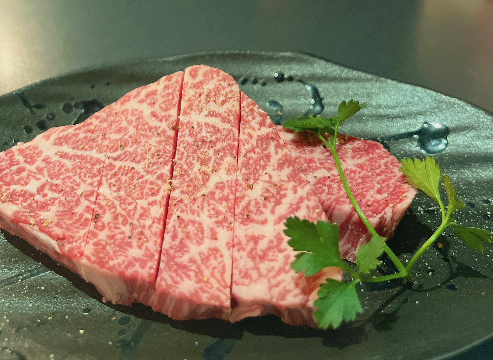 最高の佐賀牛を堪能できる季楽！
キレイに発色している赤身ときめ細かなサシのバランスが最高で
噛みしめる度にお肉の美味しさが口の中に広がります！
佐賀牛レストラン 季楽(きら)本店
営業時間：11:00～15:00 17:00～22:00
定休日：第2水曜日
予約可否：予約可
駐車場：あり
TEL：0952-28-4132
住所：佐賀県佐賀市大財3-9-16
URL： 食べログで見る
国指定名勝！毛利氏庭園！
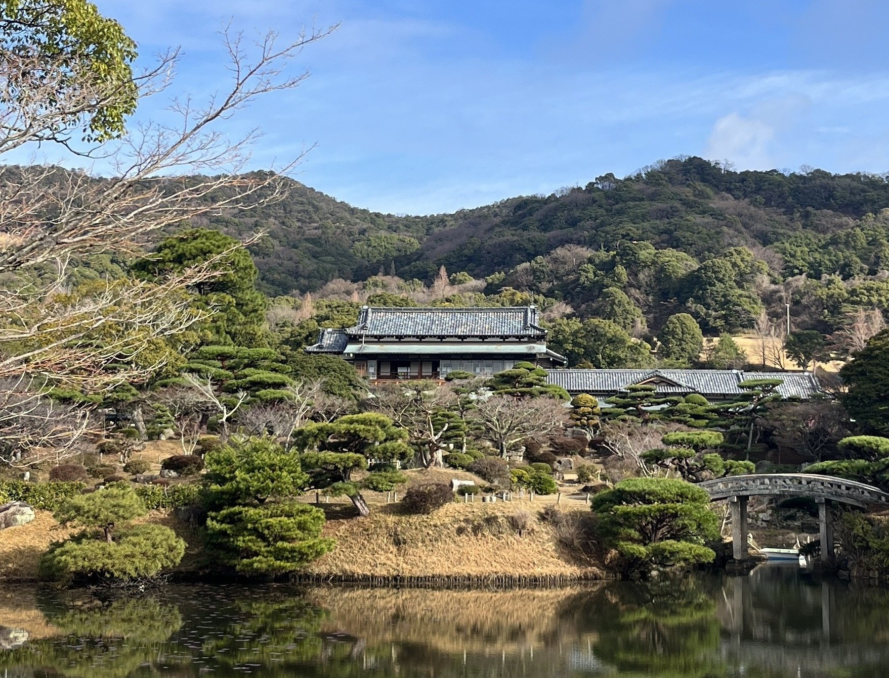 30万平方メートルの広大な敷地を持つ毛利氏庭園！
丁寧に手入れされた日本庭園は自然の癒しとパワーがもらえます！
敷地内にある旧毛利家本邸は大正天皇や昭和天皇も宿泊されたことがあり
国の重要文化財にも指定されています！下関のふぐを頂ける！宮の内茶寮！
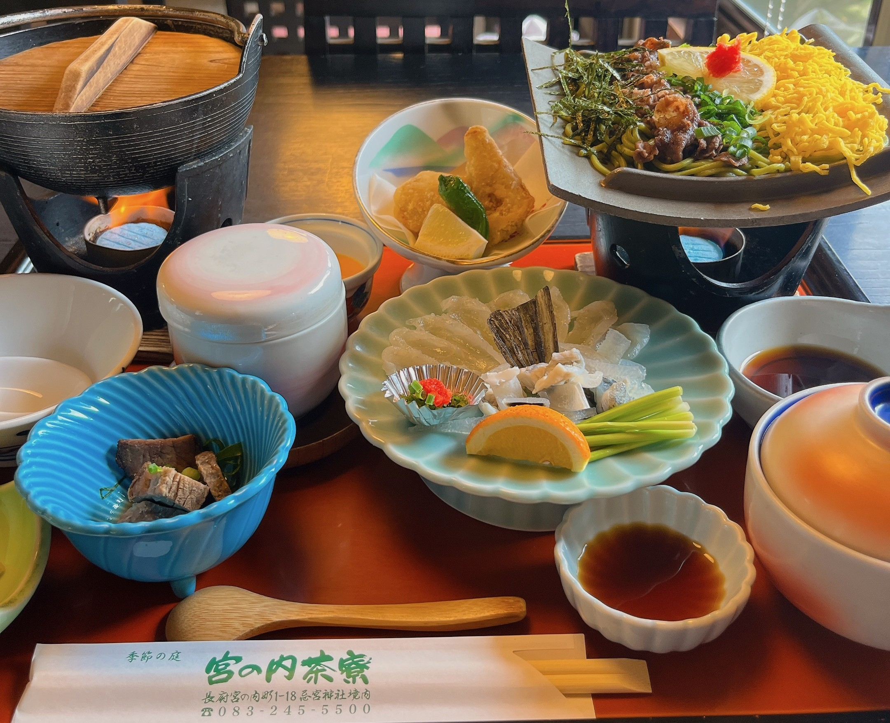 山口名物である瓦そばや下関のふぐを堪能できる宮の内茶寮！
お刺身と天ぷらで頂けるふぐはふぐの美味しさを最大限に味わえます！
宮の内茶寮
営業時間：11:00～14:00 17:00～21:00
定休日：不定休
予約可否：予約可
駐車場：あり
TEL：050-5872-4117
住所：山口県下関市長府宮の内町1-18
URL： 食べログで見る
1800年の歴史を持つ神社！忌宮神社！
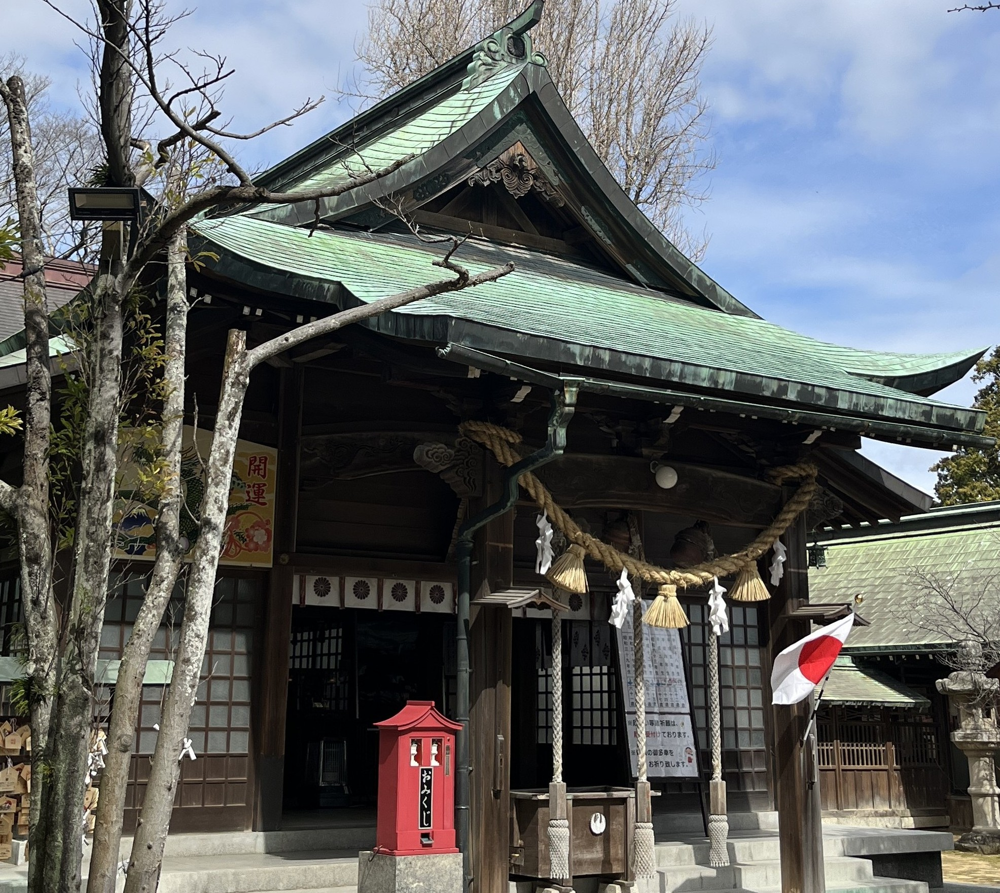 古事記や日本書紀にも記載のある忌宮神社！
境内にある宝物館は400点以上の資料が収蔵されており
伝則宗・長船盛光の太刀など数点は国の重要文化財に指定されています！
壇ノ浦の戦いゆかりの地！赤間神宮！
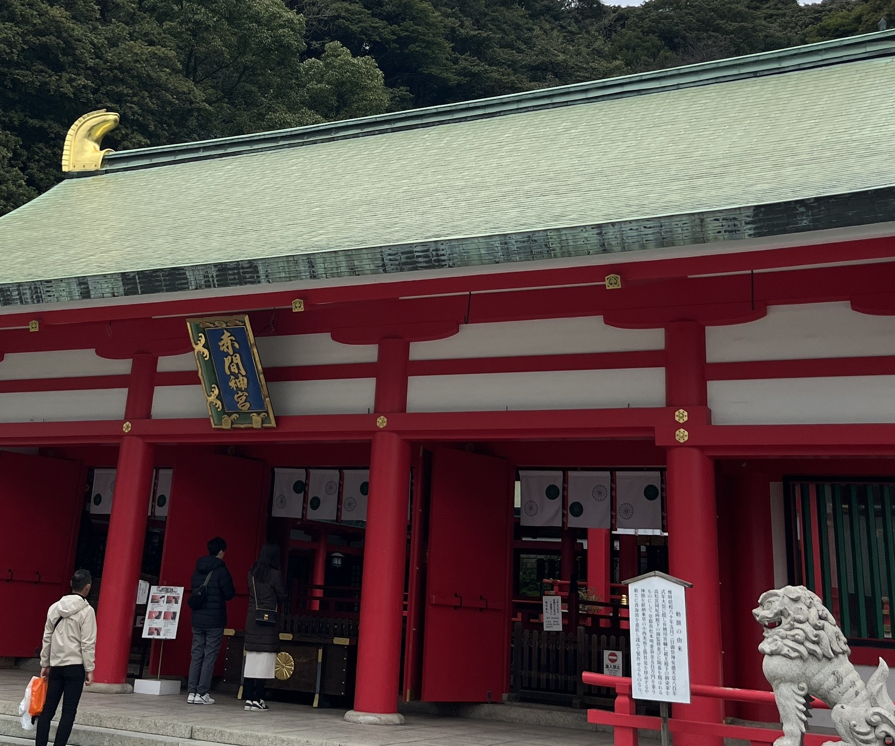 壇ノ浦の戦いで亡くなられた安徳天皇を祀る赤間神宮！
平家に関わりの深い神社で耳なし芳一の物語が伝わる場所でもあります！
日本屈指の大鍾乳洞！秋芳洞！
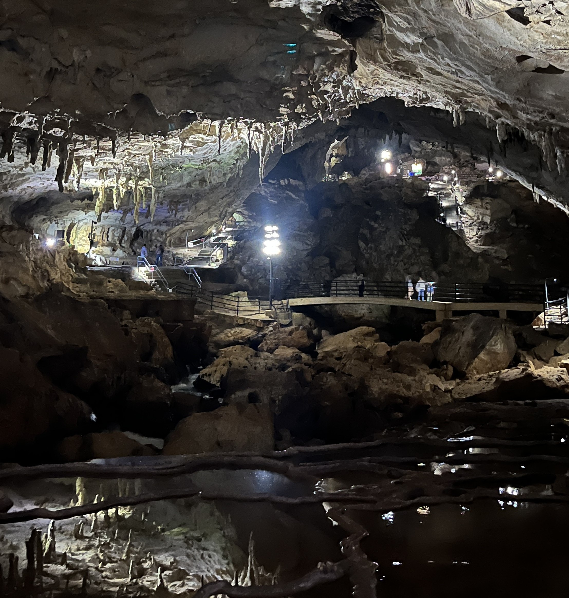 総延長11.2kmの長さを誇る秋芳洞！
洞窟は季節に関係なく約17℃と涼しく快適です！
約1kmのきれいで壮大なコースを楽しむことができます！秋芳洞(あきよしどう)
営業時間：3月～11月 8:30～17:30
12月～2月 8:30～16:30定休日：なし
駐車場：あり 普通車：500円
住所：山口県美祢市秋芳町秋吉3449番地1
URL： 秋芳洞公式サイト
最高の見蘭牛を焼肉で！見蘭！
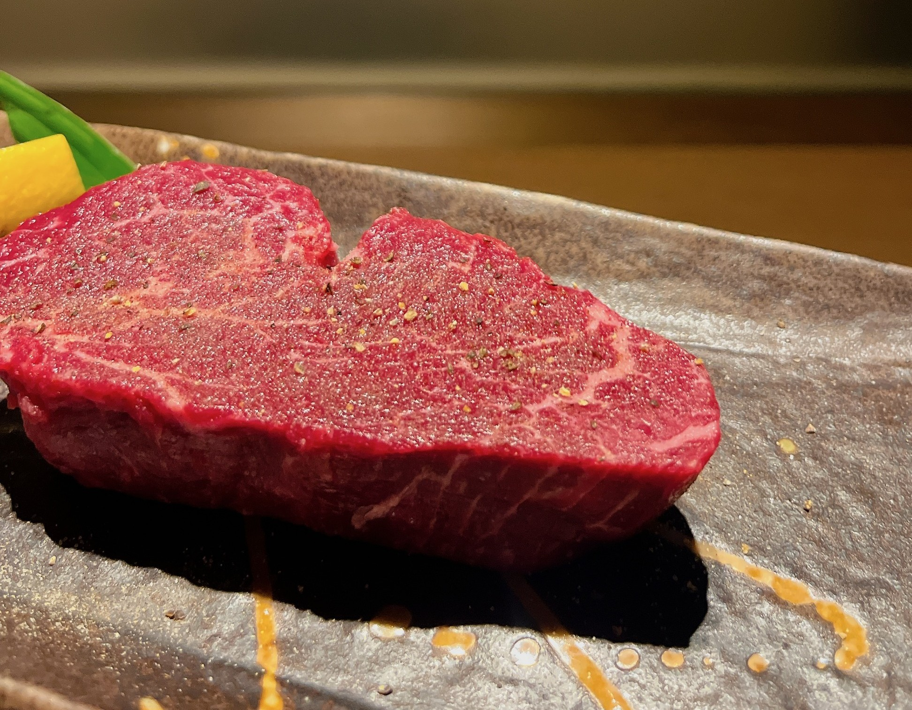 三島牛の血統を継いだブランド牛を頂ける見蘭！
上質な赤身と主張しない脂身の旨味がとても美味しいです！
鮮度が良くないと頂けない10秒ロースはお肉の美味しさを最大限に楽しめます！
網焼レストラン 見蘭(けんらん)
営業時間：17:00～22:00
定休日：月曜日(祝日の場合は翌日)、年末年始
予約可否：予約可
駐車場：あり
TEL：0838-26-0141
住所：山口県萩市堀内89 ミドリヤファーム内
URL： 食べログで見る
走行距離
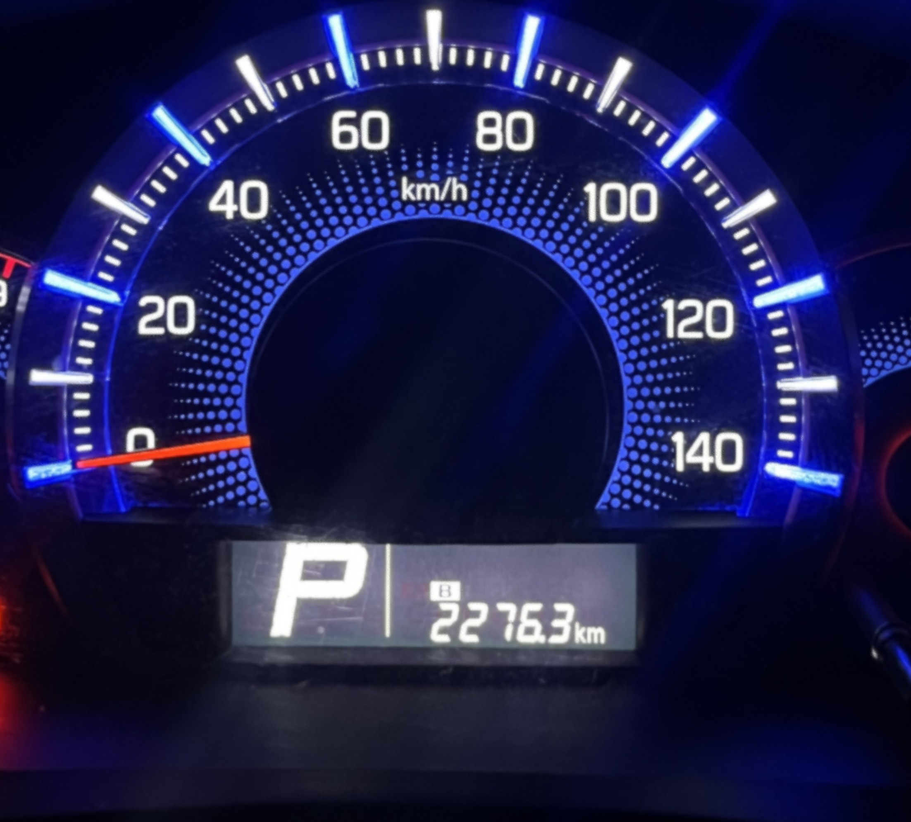 いかがでしたでしょうか！2泊3日で1日約700km以上の車旅となりました！
今回行けなかった島原城や吉野ケ里遺跡など
まだまだ観光したかった旅行となります！
伊万里牛を頂けるステーキハウスつじ川は絶対にもう一度行きたいお店で
写真は載せていませんがアワビのグラタンなど海鮮もとても美味しかったです！
長崎県では平戸牛を食べることができなかったので
次回は絶対に食べようと心に誓っております！